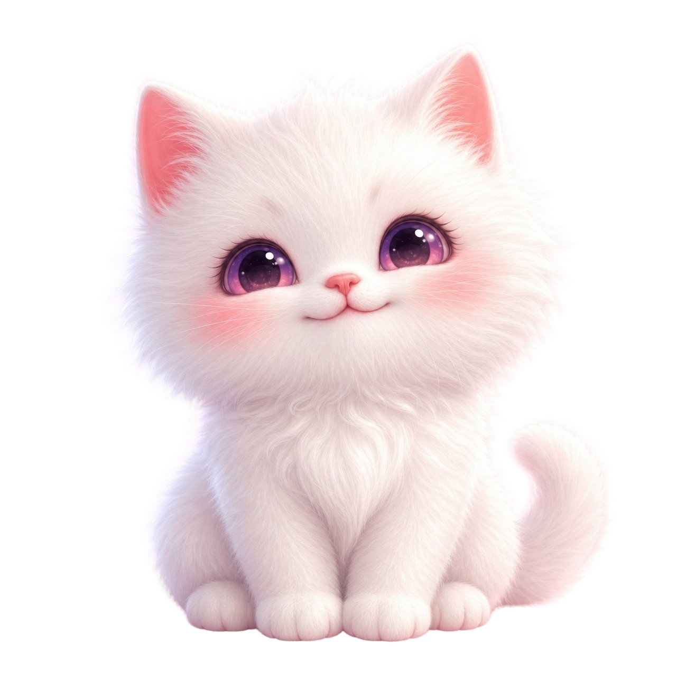
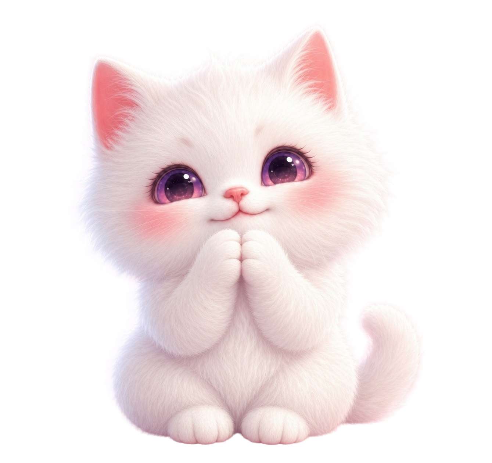
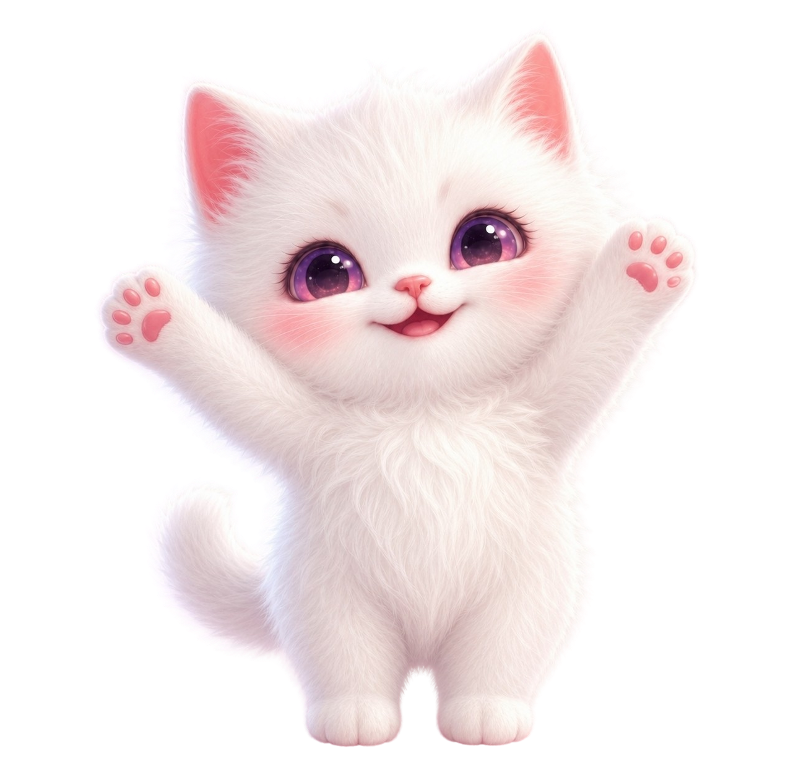
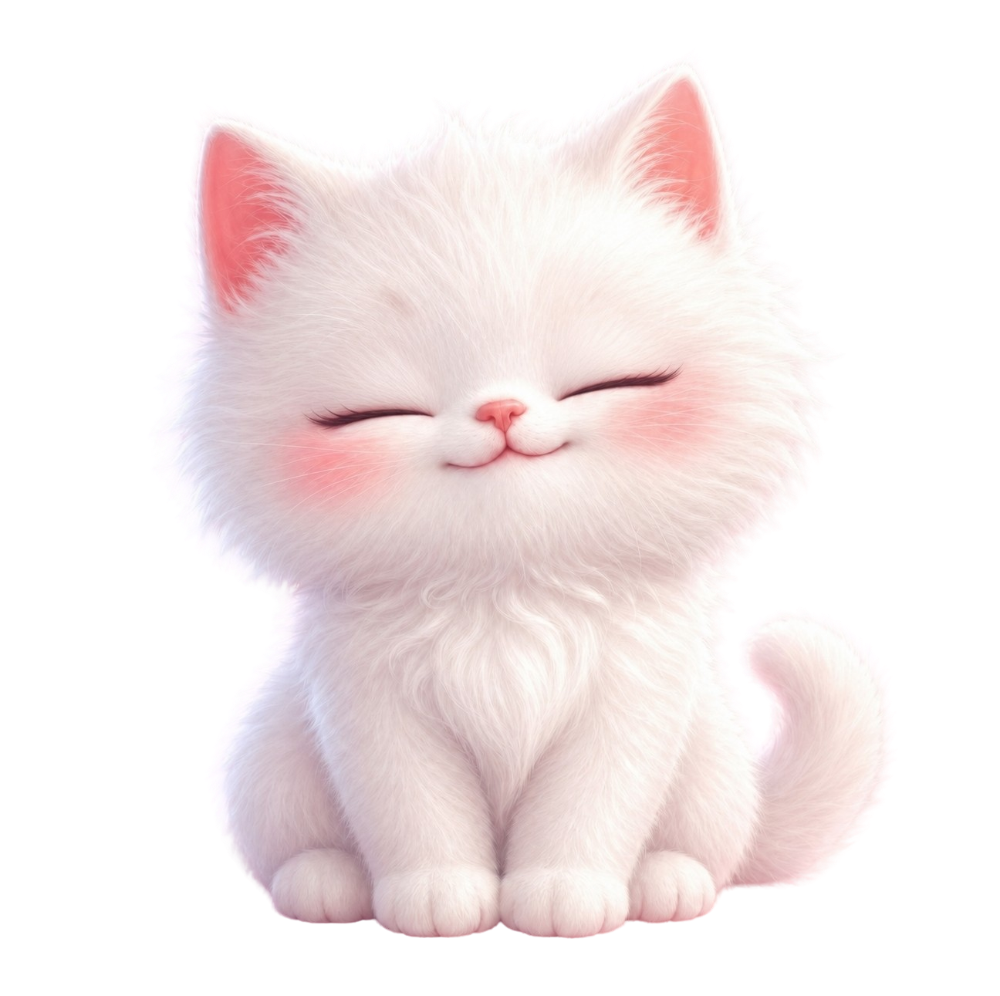
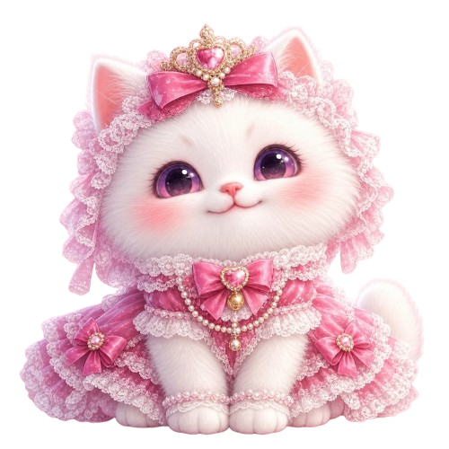

もやちカンパニー が おくる

もふふミルク Mofufu Milk
ちいさな「おかえり」から、
日本を元気に。
しろいにゃんこ「ミルク」が、今日もそっとあなたを迎えるにゃ。
Our Wish

ミルクの、ねがいごと。
がんばった日も、そうじゃなかった日も。
しろいにゃんこ「ミルク」は、「おかえり」と、あなたをそっと迎えます。
元気をもらったあなたが、まちに笑顔を増やす。
その笑顔が、はたらく場所をあたためる。
ひとりひとりのやさしさが集まって、日本は、もっと元気になれる。
ミルクが届けたいのは、ふわふわの「おかえり」。
ちいさな癒しから、大きな元気を。
そんな想いで、ミルクは生まれました。
Who is Milk?
ミルクって、こんな子。
もふふミルクは、もやちカンパニーがおくる、 まっしろでやわらかな白猫の女の子。 ピンク色のほっぺと、すこし眠たげなまんまるの瞳。 となりにいるだけで、心がふわっとほどけていく—— そんな、やさしさのかたまりにゃ。
-
やさしい癒し系
Gentle & Healing
そばにいるだけで、ほっとするにゃ。甘えん坊で、寄り添うのが大すき。
-
お魚と夕暮れがすき
Loves Fish & Sunsets
夕焼けにそまる時間が、いちばんのお気に入り。ごほうびはおいしいお魚にゃ。
-
いつも、そばに
Always by Your Side
がんばった日も、そうじゃない日も。今日も「おかえり」って、あなたを待ってるにゃ。



さあ、ふわふわの毎日を、ミルクといっしょに。
Let's make every day a little softer, together.